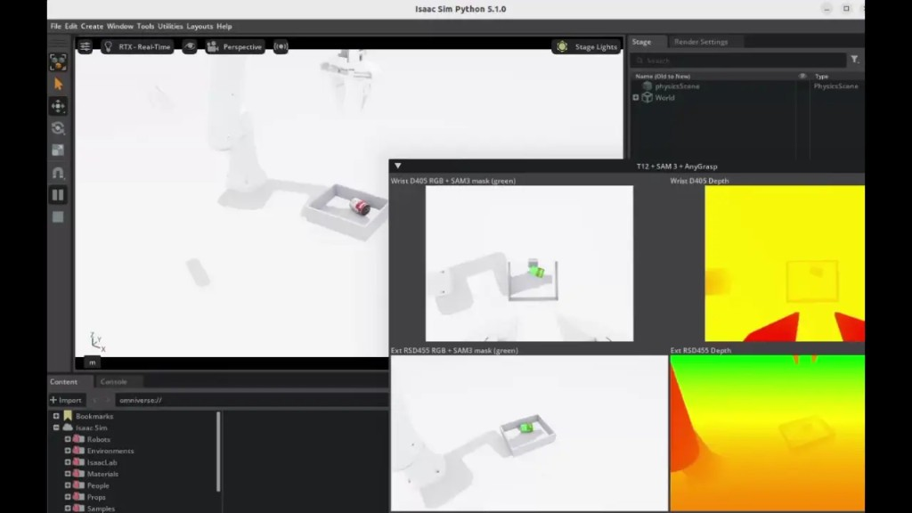

실물 로봇 도입 전, NVIDIA Isaac Sim으로 디지털 트윈·시뮬레이션 환경을 구축해 주행·제어 로직을 검증하고, 메카넘 AMR 실물 자율주행은 물론 6축 매니퓰레이터(Dobot Nova2) 시뮬레이션과 Sim-to-Real까지 연결해 온 엔지니어입니다.
NVIDIA Isaac Sim / Isaac Lab 기반으로 로봇 시뮬레이션·강화학습(RL)과 Sim-to-Real을 다뤄 온 로보틱스 엔지니어입니다. 설계 파일(SolidWorks)에서 URDF·USD로 변환하고, 센서(카메라·LiDAR)·물리·controller·planner·ROS2를 연동해 "실물이 오기 전에 미리 돌려볼 수 있는" 시뮬레이션 환경을 구성합니다. 바퀴형 AMR(메카넘·지게차)과 6축 매니퓰레이터(Dobot Nova2)를 Isaac Sim으로 다뤘고, 메카넘 AMR 실물 자율주행과 시뮬레이션 동작을 실물로 옮기는 Sim-to-Real, 그리고 현재 4축 로봇 카메라 캘리브레이션 & 강화학습(Isaac Lab)을 진행하고 있습니다.
AMR(메카넘·지게차)·매니퓰레이터의 Isaac Sim 디지털 트윈·시뮬레이션 환경 구축과 실물 AMR 자율주행·Sim-to-Real 개발 담당. 아래 프로젝트가 실무 수행 내역입니다.
카메라 캘리브레이션으로 비전-로봇 좌표를 정합하고, Mixed Palletizing(혼적 적재)용 4축 산업용 로봇을 Isaac Lab에서 강화학습(RL) 기반 동작으로 학습·검증하는 파이프라인을 구축 중.
실물 지게차 제작·도입 전에 업체의 실제 창고를 Isaac Sim에 재현해 자율주행·정밀 도킹까지 완성하고, 검증된 ROS2 스택을 실물 지게차로 그대로 이관하는 것을 목표로 한 프로젝트. USD·URDF 제작부터 주행·도킹까지 거의 단독으로 파이프라인을 구축.
6축 매니퓰레이터 Dobot Nova2를 Isaac Sim 디지털 트윈으로 구축하고, 커스텀 ROS2 브리지로 가상·실물을 동시에 구동하는 Sim-to-Real 구조를 단독으로 구현한 프로젝트.

메카넘 휠 AMR을 Isaac Sim에서 구현해 실물 주행 전 문제 요소를 사전 점검하고, 시뮬레이션에서 완성한 코드를 실물로 이관해 자율주행까지 완료한 프로젝트.
산업공학을 전공하며 데이터와 시스템 관점에서 문제를 정의하고 최적화하는 훈련을 받았고, 학부연구생으로 제조 공정 데이터를 분석하며 ‘현상을 수치로 검증하는’ 태도를 길렀습니다. 이후 로보틱스 부트캠프에서 ROS2·시뮬레이션·자율주행·비전을 직접 구현하며 소프트웨어로 로봇을 움직이는 경험에 매력을 느꼈고, 현재는 NVIDIA Isaac Sim 기반 시뮬레이션과 Sim-to-Real을 실무로 다루는 로보틱스 엔지니어로 성장하고 있습니다.
‘실물에 적용하기 전에 시뮬레이션에서 끝까지 검증한다’는 원칙을 중요하게 생각합니다. 디지털 트윈으로 미리 문제를 찾아내고 결과를 데이터로 확인해 개선하는 꼼꼼함이 강점입니다. 처음 맡는 영역도 문서·포럼·코드를 파고들어 환경을 직접 구성해내는 자기주도성이 있습니다. 다만 완성도에 집중하다 보면 일정 대비 과하게 파고드는 경향이 있어, 우선순위와 마감 기준을 먼저 정하고 진행하는 방식으로 보완하고 있습니다.
실물 로봇을 다루기 전에 시뮬레이션에서 검증하고, 검증한 결과를 실물로 옮기는 과정에 매력을 느껴 로봇 시뮬레이션·Sim-to-Real 분야를 이어왔습니다. Isaac Sim으로 AMR과 매니퓰레이터를 검증하고 센서·물리·제어·ROS2를 연동해 온 경험을 바탕으로, ROS/ROS2 기반 로봇 제어와 시뮬레이션 개발에 바로 기여하고 싶어 지원했습니다.
Isaac Sim 환경에서 로봇 모델링·센서 구성·동작 검증과 디지털 트윈 검증 환경을 안정적으로 구축하고, 시뮬레이션과 실제 로봇 간 연동 구조를 설계·고도화하는 데 기여하겠습니다. 나아가 로봇 제어·인식·시뮬레이션을 아우르는 시스템 관점의 전문성을 갖춘 엔지니어로 성장하겠습니다.